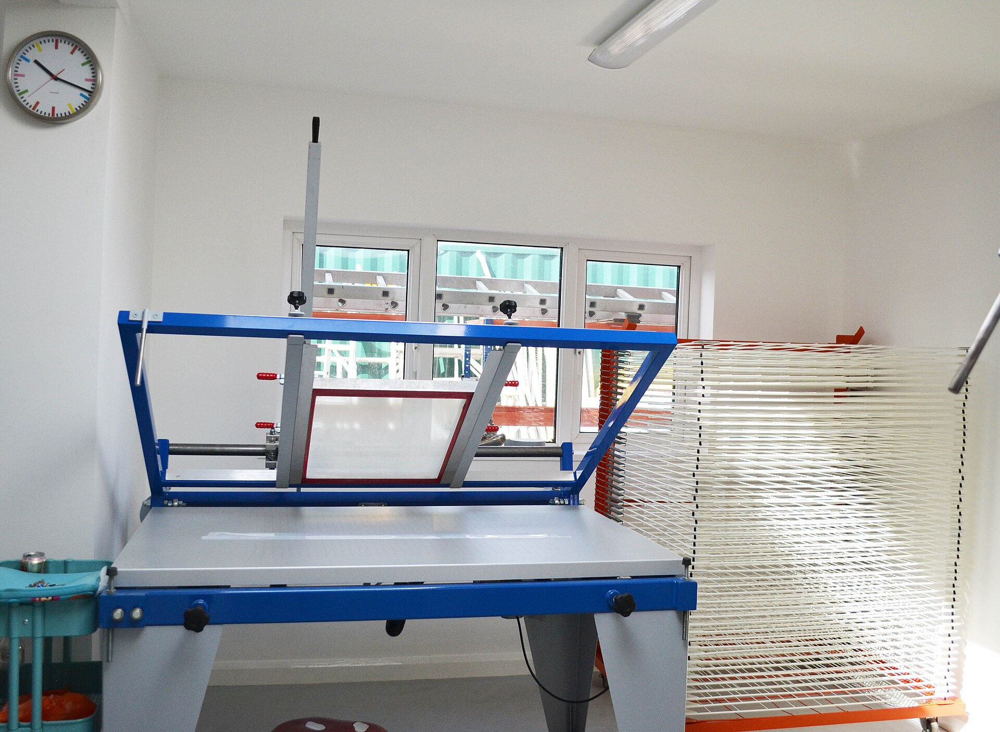
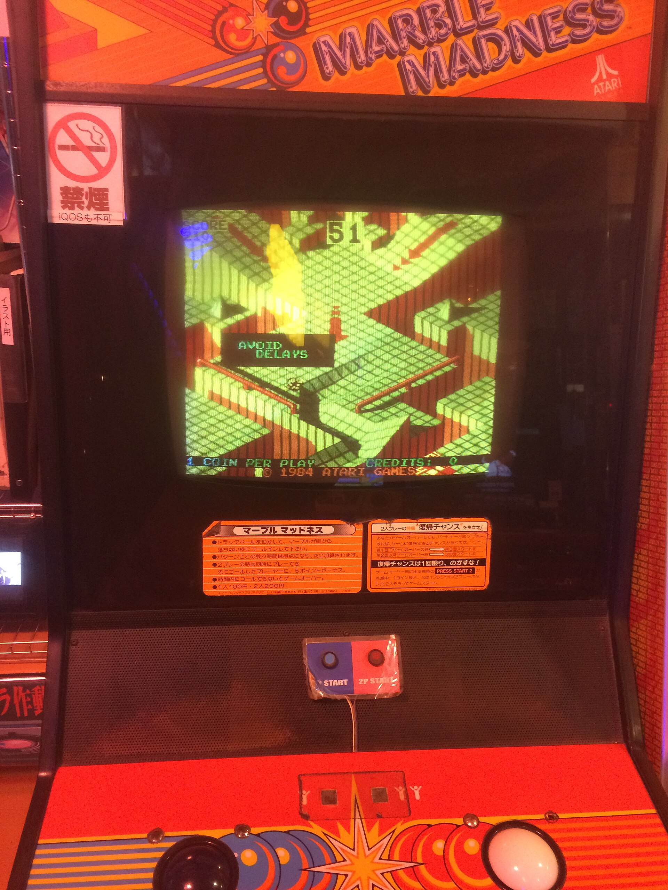
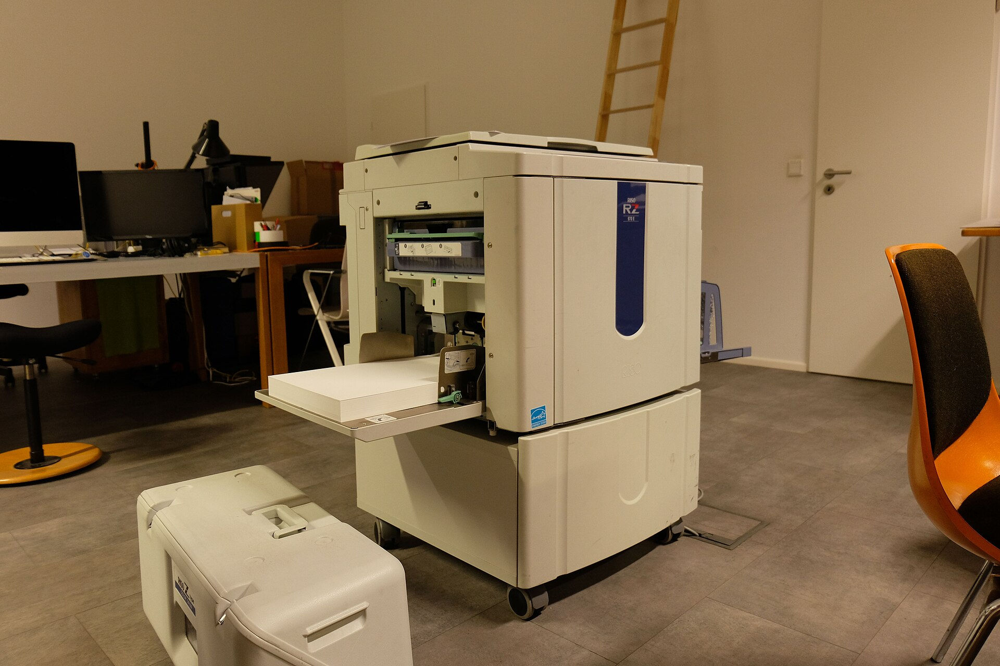

ST-371994
最早的那张
荧光绿压到可读档的 #007B3F 之后印在白纸上，色相仍是 150.8°、明度 24%。

1.6px 方头线宽的实物参照。Scrud123 · CC BY-SA 3.0 · Wikimedia Commons砂面抓地贴纸裁切错位（错误码 GRIP-30）：撕痕位图与贴纸层的基线差了 3px，卷边的 1px 高光被切掉一半，背胶残迹带只剩 55% 那段还完整。
上一帧冻结在 -32deg、斜切带 96px、错位 9px；已落贴 37 / 37 张，唯一未确认的是 ST-12。编号、分数与撕痕位图照旧可读，只是对不上同一条对角线。
撕痕位图停在偏移 3px 的那一帧。重新对齐按构建期顺序：先出离型纸底 120ms，再逐张贴回贴纸（每张 140ms、间隔 40ms），最后重划撕痕。
基础 12 栏、栏距 16px、外距 32px、基线 6px。版面被一条从左上到右下的对角线切开，角度按宽高比算出，1440×900 时为 -32deg。不对称：两半内容沿对角线各错位 9px，下半偏右下、上半不动；下半底色在 #EDEDED 上叠 3% 的 #141414，落成 #E6E6E6。留白：贴纸间 20px、正文块间 48px、边缘留 32px。
对角线上压着一条 96px 斜切色带，带里是装饰用的实色 #00E676：不承载文字与图标，若带上有文字，文字固定用 #007B3F。37 张里挑出 10 张可撕的，上半 5 张、下半 5 张，绿色只出现在贴纸本体内。
ST-371994
荧光绿压到可读档的 #007B3F 之后印在白纸上，色相仍是 150.8°、明度 24%。
ST-044 × 2px
起点内 8px 有一处 4×2px 指甲印，是撕这张贴纸的人留下的；程序生成的撕裂边缘不会带这个。
ST-066–28px
撕边单个缺口宽 6–28px、深 2–9px，形状来自扫描的撕痕位图，不用规则折线冒充。
ST-099px
贴纸本体浮在离型纸之上 9px，厚度用 1px 深边加 0.5px 亮边表达，不使用投影。
ST-1155%–70%
撕痕内侧一条 1.5px 白色背胶残迹带，不透明度 55%–70%，沿撕边疏密不均。
ST-1212
分数是钉在角落的等宽数字块，闯关编号与分数都不参与对角错位，压在下半也钉死在角上。
ST-166–14px
撕痕两端各有 6–14px 卷边，两段实色加 1px 高光表现纸的厚度，方向固定朝观看者左上。
ST-211.6px
带螺母的短柱，画在 14 单位网格上、线宽 1.6px 方头；线色继承文字色并降 25% 明度。
ST-2785 线
砂面按 85 线硬边网点斜排点阵，不做柔化；密度 0.72、不透明度 0.14。
ST-31-32deg
≥1200px 全开 -32deg；820–1199px 收 -26deg、错位收 6px；<520px 转向页高、角度收 -58deg。
撕边不是折线，是位图：缺口宽 6–28px、深 2–9px；内侧背胶残迹带 1.5px，不透明度 55%–70% 沿撕边疏密不均。下面这条按原值摆出，没有缩放。
6–28px、深 2–9px，掩码从左上到右下扫过 240ms 划出。1.5px 白带，不透明度 55% 到 70%；两层实色叠出疏密，不用模糊。6–14px，两段实色加 1px 高光，方向固定朝观看者左上。1px 深边加 0.5px 亮边，全部直角；贴纸是刮上去的，不是浮起来的。4×2px，固定在对角线起点内 8px，不随缩放与错位移动。#EDEDED 离型纸冷白 46%，正文 #141414 压在上面 15.74:1。
#007B3F 荧光绿 28%，只在贴纸本体内；作按钮底用白字，5.38:1。
#00E676 装饰性实色块：不承载文字与图标，其上文字固定 #007B3F。
#141414 脏黑 26%，贴纸轮廓与撕裂阴影，L 7.8%。
图标自绘，取自滑板硬件与街机 HUD：14 单位网格、1.6px 方头线宽。砂纸是斜排点阵，桥钉是带螺母的短柱，分数是钉在角落的等宽数字块。
85 线。13 单位，底座 4 单位。六张实拍把丝印台、Risograph、街机柜与层压板的质感摊开，三色丝网分色：荧光绿 #007B3F 只在贴纸本体，#141414 只用于轮廓与阴影，其余留离型纸冷白。作者与许可逐张写在图下，全表在 assets/CREDITS.md。





四个档位给四个不同答案。窄档不是把宽档缩小，是把色带转到另一条轴上。
| 断点 | 对角线角度 | 斜切带 | 贴纸层错位 | 撕痕缺口 / 卷边 |
|---|---|---|---|---|
| ≥1200px | -32deg | 96px | 9px | 6–28px / 6–14px |
| 820–1199px | -26deg | 96px | 6px | 6–20px / 6–10px |
| 520–819px | 保留角度，不切开内容 | 3px 斜切分隔带 | 单列纵向，0px | 6–16px / 6px |
| <520px | -58deg | 转到页高方向，带高 96px | 3px | 6–14px / 6px |
窄档保留对角对切：斜切带由页宽方向转到页高方向，角度由 -32deg 收到 -58deg，带高仍 96px，错位保留 3px；缺口缩到 6–14px、深 2–4px，卷边保持 6px，背胶残迹仍在撕痕内侧。
位移只跑 transform 与 opacity。滚动时两半沿对角线反向推挤：下半向下 24px、上半向上 24px，错位量在同一个来回里从 9px 变到 0 再回到 9px；方向切换用 180ms 阻尼过渡 cubic-bezier(0.3,0.9,0.3,1)。
0→24px 三角波，来回一次约 2400px；同一个波把错位量从 9px 收到 0 再放回。1px 高光沿卷起方向延伸 1px，90ms 阶跃。120ms，再逐张落贴纸（每张 140ms、间隔 40ms，硬停不回弹），最后撕痕掩码扫过 240ms。40px 再合拢，合计 360ms。26px 刮板图形跟着指针走，刃口 2px，不遮挡文字。100ms）并显出这张贴纸的编号。减少动态时的再发明（prefers-reduced-motion: reduce）：签名机制完整静态保留——两半的 9px 对角错位、撕痕位图、背胶残迹 55%–70% 的疏密、6–14px 卷边、4×2px 指甲印全按原值呈现；推挤量归 0px，错位固定在 9px 不再起伏；刮板光标不消失，仍是 26px、刃口 2px，只随指针出现；过渡压到 120ms 的不透明度切换。
这一关还没人过。上周最高分 84,200，是周三晚上出的。